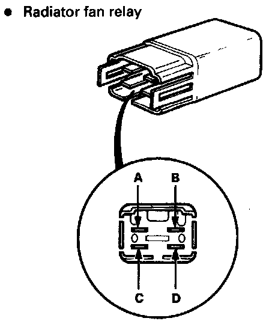
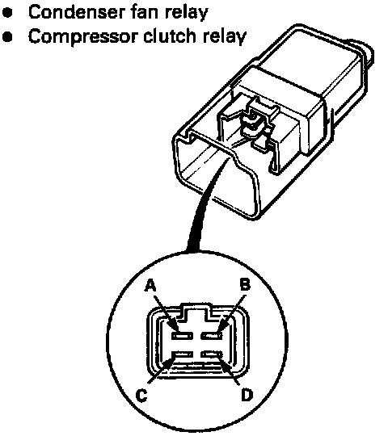

Compressor Clutch Relay: Testing and Inspection
Relay Test


There should be continuity between the A and C terminals when power and ground are connected to the B and D terminals.
There should be no continuitv when power is disconnected.